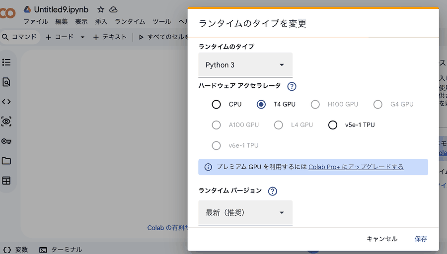

How to work through this course with models running on your own machine or a shared lab server. Setup, the traps, and how to narrow down a connection problem.
The hands-on parts of this course assume you run models locally. A cloud API setup works the same way, but it costs money and needs an account and model access. When you are setting up an environment for a whole class, arranging the billing is itself the obstacle. So local is the default here.
What actually changes is the model and the provider. The agent is still Cline; the repository layout, the prompts and the commands are the same.
.clinerules, commands such as /deep-planning and /selfcheck.md, how CI is put together
Doing everything with one model means tying up a large model for trivial work, while a small model breaks partway through a long implementation loop. Splitting by role is easier to live with.
| Role | Model | Ollama tag | Where it lives |
|---|---|---|---|
| The agent implementation, planning, self-check | Qwen3.8 27B | qwen3.8:27b | Shared lab server (A.3.4) |
| Light work summaries, drafts, Exercise 1 in Part 2 | Qwen3.5 4B | qwen3.5:4b | Each student's laptop |
The default Ollama build of Qwen3.8 27B is around 18 GB at Q4_K_M quantisation, with tool calling and thinking. Tool calling is exactly what a coding agent needs, so whether a model supports it is the deciding factor. With about 24 GB of VRAM it fits at a usable context length.
Qwen3.5 4B also supports tool calling. It is enough for work like Exercise 1 in Part 2, where the target is clear and each change is small. It is too small for the long implementation loops in Part 5.
Treat the 4B as good for small, precise requests, and use the 27B from Part 5 onwards.
ollama list and the official library page before using them. What is written here was accurate at the time of writing.
This appendix assumes Ollama 0.32.15. Installing Ollama itself is covered in Setup, section 02.
ollama --version
# ollama version is 0.32.15
# the agent model (about 18 GB)
ollama pull qwen3.8:27b
# the light model (on each laptop)
ollama pull qwen3.5:4b
# is the GPU visible?
nvidia-smi
ollama psThis is the setting people most often miss.
Ollama's default context length is too short for coding agent work. The conversation history gets trimmed with no warning, and the agent forgets a file it created a moment ago.
A model supporting a long context does nothing on its own. The runtime default is what applies unless you set num_ctx.
The reliable approach is a derived model with the setting baked in. This also matters when you run your own agent in Part 6. Setting num_ctx in code affects one call; changing the model default is safer.
# Modelfile.agent
FROM qwen3.8:27b
PARAMETER num_ctx 131072ollama create qwen38-agent -f Modelfile.agent
ollama show qwen38-agent # confirm num_ctx took effectollama ps shows work spilling to the CPU, lower num_ctx or look at quantising the KV cache. The moment it falls back to CPU, the speed becomes unusable.
Putting the 27B on one machine with a GPU is easier to manage than distributing it to every laptop.
# on the server (exposed on the LAN)
OLLAMA_HOST=0.0.0.0:11434 ollama serve
# from a client
curl http://<server>:11434/api/tagsTo use the lab server from outside, put authentication in front of it. Cloudflare Access is the example here.
Ollama has an OpenAI-compatible endpoint. Add /v1 and existing clients work unchanged.
| Endpoint | Model | |
|---|---|---|
| Your laptop | http://localhost:11434 | qwen3.5:4b |
| The lab server | https://<hostname>/v1 | The 27B model |
qwen3.5:4b. The 27B used from Part 3 lives on the server.ollama list locally will not show it. That is correct. 18 GB per student is more than most classroom networks and laptops can absorb at once.
import os
from openai import OpenAI
client = OpenAI(
base_url="https://<hostname>/v1",
api_key="ollama", # Ollama ignores this
default_headers={
"CF-Access-Client-Id": os.environ["CF_ACCESS_CLIENT_ID"],
"CF-Access-Client-Secret": os.environ["CF_ACCESS_CLIENT_SECRET"],
},
)
for m in client.models.list().data:
print(m.id)If the model appears in the list, you are connected.
.env, confirm it is in .gitignore.# PowerShell (this session only)
$env:CF_ACCESS_CLIENT_ID="<your ID>"
$env:CF_ACCESS_CLIENT_SECRET="<your secret>"
# macOS / Linux
export CF_ACCESS_CLIENT_ID="<your ID>"
export CF_ACCESS_CLIENT_SECRET="<your secret>"Choose OpenAI Compatible as the provider. Not the Ollama provider.
| Field | Value |
|---|---|
| Provider | OpenAI Compatible |
| Base URL | https://<hostname>/v1 |
| API Key | Any string (Ollama ignores it) |
| Model | The model name you were given |
| Custom headers | CF-Access-Client-Id and CF-Access-Client-Secret |
For Continue, it goes in the config file.
models:
- name: Lab 27B
provider: openai
model: <model name>
apiBase: https://<hostname>/v1
apiKey: ollama
roles: [chat]
requestOptions:
headers:
CF-Access-Client-Id: ${{ secrets.CF_ACCESS_CLIENT_ID }}
CF-Access-Client-Secret: ${{ secrets.CF_ACCESS_CLIENT_SECRET }}${{ secrets.X }}, the VS Code extension does not see variables you exported. They have to be in a .env file.| Location | When to use it | |
|---|---|---|
| 1 | .env in the working folder | For that project only |
| 2 | .continue/.env in the working folder | Same, but kept separate for Continue |
| 3 | ~/.continue/.env | Shared across projects. Easiest for a class |
| 4 | OS environment variables | Continue CLI only. Not the VS Code extension |
Option 3 is what we recommend. Write it once and it works in every folder.
# ~/.continue/.env
CF_ACCESS_CLIENT_ID=<your ID>
CF_ACCESS_CLIENT_SECRET=<your secret>Do not put quotes around the values. It is dotenv format.
~ is C:\Users\<username>, so the file is C:\Users\<username>\.continue\.env.
.env.txt. It looks like .env, so you never notice.# 1. find out where your home is
echo $HOME
# 2. create the folder (does nothing if it exists)
New-Item -ItemType Directory -Force -Path "$HOME\.continue" | Out-Null
# 3. write the contents
[System.IO.File]::WriteAllText(
"$HOME\.continue\.env",
"CF_ACCESS_CLIENT_ID=<your ID>`nCF_ACCESS_CLIENT_SECRET=<your secret>`n"
)
# 4. check it
Get-Content "$HOME\.continue\.env"Set-Content -Encoding utf8 writes an invisible BOM at the start of the file. The first key then reads as CF_ACCESS_CLIENT_ID and the value is never found.WriteAllText above writes no BOM.
New-Item -ItemType Directory -Force -Path "$HOME\.continue" in PowerShell to make the folder%USERPROFILE%\.continue in the address box.envVS Code will not add an extension, and the status bar shows you the encoding is UTF-8.
C:\Mac\Home. That is not your Windows home.echo $HOME first.
mkdir -p ~/.continue
cat > ~/.continue/.env <<'EOF'
CF_ACCESS_CLIENT_ID=<your ID>
CF_ACCESS_CLIENT_SECRET=<your secret>
EOF
cat ~/.continue/.envReload VS Code afterwards (Ctrl + Shift + P → Reload Window). The file is read at startup, so nothing happens while the window stays open.
.env is in .gitignore.cloudflared access tcp to forward a local port, and set the Base URL to http://localhost:<port>/v1. The tunnel handles authentication, so the extension never needs the headers.qwen3.5:4b locally. The exercises in Parts 1 and 2 are fine on it.
| Field | This course (Ollama) | For reference: a cloud API |
|---|---|---|
| API Provider | Ollama or OpenAI Compatible | Amazon Bedrock and similar |
| Base URL | http://localhost:11434or http://<server>:11434 | — |
| Model ID | qwen38-agent (built in A.3.2) | A Claude or GPT model |
| Authentication | None | aws configure sso and similar |
| Cost | Your own hardware | Per-token billing |
As an OpenAI-compatible endpoint, add /v1 to the Base URL. No API key is needed, but if the field is mandatory, any string will do.
Once configured, send one message to confirm the round trip. If nothing comes back, it is almost always connectivity or a mistyped model name.
| Part | Note |
|---|---|
| 2 and 3 | Already written for local models. Exercise 1 in Part 2 needs only qwen3.5:4b and no Cline. Do the num_ctx setup in A.3.2 before Part 3. |
| 4 review | No change. If anything, a local model fails more often, which raises the value of linters, tests and CI. Do not skip this part. |
| 5 tests | No change. Flask and pytest run the same locally. |
| 6 implementation | Written for local models already. Handing over at 70% context, and keeping reference material short, both assume a local model. |
| 7 your own agent | MCP is described as a layer independent of both the model and the language, so nothing needs rewriting. |
The agent forgets a file it just made, proposes the same fix repeatedly, or stops making sense halfway through a plan. No error appears, which is what makes it hard to spot.
Do the num_ctx setup in A.3.2 first.
Cline's file rewriting requires the target string to match exactly. Local models tend to need several retries here.
The remedy is to touch fewer files and change less per request. Apply the "cut the work into small iterations" idea from Part 5 more aggressively.
Sometimes the model writes the tool call out as prose instead of calling it. This kind of problem is often fixed by a runtime update, so if it persists, try a different combination of Ollama version and model tag.
With a local model, leaving auto-approve on means it can run for a long time in a broken state.
More approval points usually finish faster overall.
Reference material moved here from Part 1. You do not need it to follow the course. Read it when you are choosing your own setup.
| Model developers | First access to new capabilities. OpenAI, Anthropic, Google |
| Hosting platforms | Many models behind one API. OpenRouter and similar |
| Managed services | Integrated with cloud identity and networking, better for governance. Amazon Bedrock, Azure AI Foundry, Vertex AI |
| Running it yourself | Open-weight models on your own hardware. Ollama, vLLM, llama.cpp. This course |
The first fork when choosing a model is not performance or price. It is whether the weights are published.
| Proprietary | Open-weight | |
|---|---|---|
| How you get it | Call an API. You cannot see inside | Download the weight files |
| Where it runs | The provider's data centre | Anywhere, including your own machine |
| Cost | Per token | Electricity and hardware |
| Risk of it stopping | Discontinuation, price rises, terms changing | It runs as long as you have it |
| Modification | Not possible | Fine-tuning, quantisation, distillation |
| Examples | Claude, GPT, Gemini, Grok | Qwen, DeepSeek, Kimi, GLM, Llama, Gemma, gpt-oss |
This section dates faster than anything else here. Rather than the names, look at what families exist and what axes they differ on. Those hold longer than any particular model.
| Family | From | Position |
|---|---|---|
| Qwen | Alibaba | Apache-2.0. A wide range of sizes, strong even when small. Used in this course |
| DeepSeek | DeepSeek | MIT. Showed that reasoning models could be published, and changed expectations |
| Kimi | Moonshot AI | Very large MoE. Well regarded for agent use and terminal work |
| GLM | Z.ai | MIT. Focused on coding and agents |
| Llama / Gemma | Meta / Google | The family that started the open-weight movement, and its smaller sibling |
| gpt-oss | OpenAI | OpenAI's open-weight release. Apache-2.0 |
| Claude / GPT / Gemini | Anthropic / OpenAI / Google | Proprietary, used through an API |
Until around 2024, open-weight models were assumed to be a few generations behind proprietary ones. Through 2025 and 2026 that gap narrowed sharply. This course can run a coding agent on your own machine because of that change.
Running locally, these matter before benchmark scores do.
Parameter count. The 4b or 27b at the end of a name. Bigger is more capable, uses more memory, and is slower.
Dense and MoE. A dense model uses every parameter each time. MoE (Mixture of Experts) splits the model into many experts and activates only some per input. A figure like "1.6T total / 4.9B active" means you need memory for the total, but only part of it computes. For a single GPU, a mid-sized dense model is more realistic.
Quantisation. Dropping the weights to 4 or 8 bits to save space. Q4_K_M is one such label. Quality drops slightly; size drops to roughly a quarter.
| Size | At 4-bit | Runs on | Good for |
|---|---|---|---|
| 3B–8B | 2–6 GB | A laptop, even without a GPU | Summaries, formatting, small precise requests |
| 14B–32B | 8–20 GB | One GPU, 24 GB class | Real agent work. The centre of this course |
| 70B and large MoE | 40 GB to hundreds | Multiple GPUs, a server | Shared across a lab or an organisation |
| Benchmark | What it measures |
|---|---|
| SWE-bench Verified | Bug fixes from real GitHub issues. Top models are approaching saturation, so it discriminates less than it did |
| SWE-bench Pro | Fixes spanning several languages and files |
| Terminal-Bench | Completing a task in a terminal. The one to look at for agent use |
| LiveCodeBench | Problems from after the training cutoff, so harder to contaminate |
| Aider Polyglot | Retry-after-error format, close to how an agent actually behaves |
No single score settles the question. Numbers a vendor measured themselves were taken under conditions they chose. Look at a benchmark close to how you actually work, then try the model on your own codebase at a small scale.
Managed cloud services usually state in their terms that submitted data is not used for training. On hosting platforms, whether data is used for training, and how long logs are kept, depends on the downstream provider and the settings.
For sensitive code, check retention periods and whether zero data retention is available, not just the training flag.
When machines in a class or a lab are all in different states, a Dev Container gives everyone the same environment. Not required for Part 5, but sometimes faster than spending the session on "it does not work on my machine".
There is another reason. Since you let the agent run commands, there is value in the workspace not being your own machine. If something goes wrong inside a container, you rebuild it rather than repair your laptop.
// .devcontainer/devcontainer.json
{
"name": "vibe-chat",
"image": "mcr.microsoft.com/devcontainers/python:3.12",
"features": {
"ghcr.io/va-h/devcontainers-features/uv:1": {},
"ghcr.io/devcontainers/features/node:1": {}
},
"postCreateCommand": "uv sync",
"customizations": {
"vscode": {
"extensions": ["saoudrizwan.claude-dev", "charliermarsh.ruff"]
}
}
}curl -LsSf https://astral.sh/uv/install.sh | sh && uv sync. There is no guarantee the freshly installed uv resolves on the PATH within that same command. Calling it immediately in the same shell can fail.uv already in it. postCreateCommand should only contain things already on the PATH.
The Node.js Feature is there because many MCP servers are distributed through npx. You are not writing JavaScript in the application (Part 6).
The same devcontainer.json works in GitHub Codespaces. If some students have no Docker locally, that is the more reliable route.
This applies if you added Continue's tab completion in Setup 06. Almost every "completion is not working" report comes from another completion feature interfering.
| Symptom | Cause |
|---|---|
| No grey suggestions at all | Another extension answers first, or Continue is disabled |
| Suggestions appear, but suspiciously fast | Those are Copilot's, not Continue's |
| Suggestions flicker, or look doubled | Two completion engines are running at once |
The second one is the troublesome case. What you thought was working turns out to be a different extension. You think you are running locally, while your code is being sent to a cloud service.
Three levels, each stronger than the last.
Click the Copilot icon in the status bar, bottom right, and choose Disable Completions. Chat stays.
From settings: Ctrl (macOS Cmd) + ,, then search for github.copilot.enable. Open Edit in settings.json and write:
"github.copilot.enable": {
"*": false
}In the extensions panel (Ctrl + Shift + X), find GitHub Copilot and choose Disable (Workspace) from the gear.
This is what we recommend for the course. Copilot keeps working in your other projects and is off only in this folder.
Disable from the same gear. Reload VS Code if asked.
If nothing appears even with the others off, Continue itself may be inactive.
ollama list character for character, including the tagautocomplete is in roles. A chat-only entry produces no completionsollama ps. If the completion model never loads, Continue is not reaching itLook at the VS Code log. Ctrl (macOS Cmd) + Shift + P, run Toggle Developer Tools, and open the Console tab.
Wrong model names and connection errors show up there. Paste the error into the agent and you will get somewhere. The method from Part 2 applies unchanged.
Exercise 1 in Part 2 assumes you hand files to the AI through Continue. If you cannot install it, you can do the same from a terminal.
The main text does not cover this. Two ways of doing the same thing makes it unclear which to use.
curl is an alias for something else. Always write curl.exe. The -H syntax differs and it will fail.
Pasting long text into ollama run can execute the line breaks partway through. Pipe the file in instead of pasting.
# PowerShell
Get-Content controls.txt | ollama run qwen3.5:4b
# macOS / Linux
cat controls.txt | ollama run qwen3.5:4bOne line, and no paste accidents.
A file alone does not say what you want done.
# PowerShell
"Fill in the blank. Output one line only.`n" +
"#sign-kushikatsu .board { fill: ______; }`n" +
"Replace ______ with a hex color for saffron orange." |
ollama run qwen3.5:4bThe reason for the blank-filling shape is the same as in Part 2. Give a 4B model one thing to decide per request.
From here it is the same as with Continue. Paste the returned CSS into region A of shinsekai_remix.html, save, and reload.
When Cline will not work, the cause is either the server or Cline. Calling the server from a terminal tells you which.
Run these in PowerShell. Each one on a single line. Wrapping splits it into two commands and the second half loses the headers.
curl.exe "https://<server>/api/tags" -H "CF-Access-Client-Id:<ID>" -H "CF-Access-Client-Secret:<Secret>"| What comes back | What it means |
|---|---|
JSON ({"models":[...]}) | Authentication works. Go to stage 2 |
HTML saying 302 Found | The credentials are not arriving. Check the header names and values |
| Nothing at all | A wrong URL, or the server is down |
When JSON comes back, the name field is the model name. Check it matches the Model ID in Cline.
capabilities here is not reliable
/api/tags may report only completion in capabilities. You cannot tell from this whether tool calling is supported./api/show for that. It includes tools.
Cline uses /v1/chat/completions. Send the same shape.
'{"model":"<model>","messages":[{"role":"user","content":"hi"}],"stream":true}' | Set-Content -Path t.json -Encoding asciicurl.exe -s -N "https://<server>/v1/chat/completions" -H "CF-Access-Client-Id:<ID>" -H "CF-Access-Client-Secret:<Secret>" -H "Content-Type: application/json" -d "@t.json"| What comes back | What it means |
|---|---|
data: {...} lines ending in data: [DONE] | The server is fine. The problem is in Cline |
| It cuts off partway | The server or the network. Tell your instructor |
404 | The URL is missing /v1 |
/v1? The most common mistakeheaCF-Access-...Use -Encoding ascii with Set-Content. Without it you get a BOM, and the server cannot parse the JSON.
Always quote the URL. Unquoted, PowerShell misreads the colon in https:.
Part 7 connects to Colab from VS Code. If that does not work for you, the browser is fine.
But you have to enable the GPU yourself. Forget it and the video generation never finishes.
